Cho HLV
Tốt nghiệp HLV Yoga trẻ em 30 giờ: tìm lớp dạy đầu tiên từ đâu?
Dạy thử mười buổi, hồ sơ năm thứ, năm nơi có thể bắt đầu, buổi dạy thử, báo giá rõ ràng. Có danh sách việc cần làm và tin nhắn giới thiệu mẫu.
Khóa đào tạo Huấn luyện viên Yoga trẻ em
Học cách dạy yoga cho bé qua câu chuyện, trò chơi, bài hát và hơi thở. Dành cho giáo viên mầm non, huấn luyện viên yoga và bố mẹ muốn đồng hành cùng con.
Học phí khóa 30 giờ
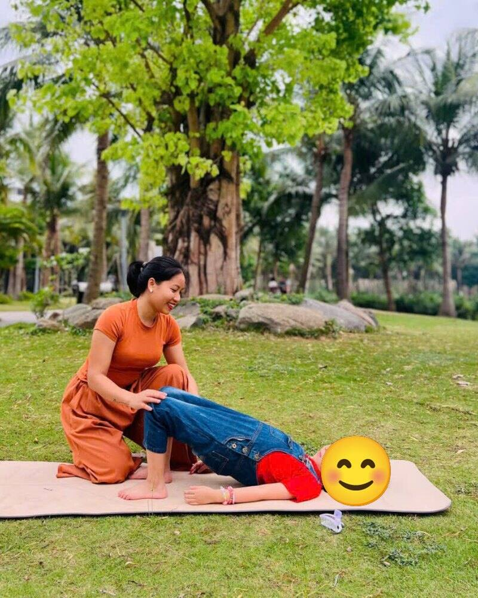

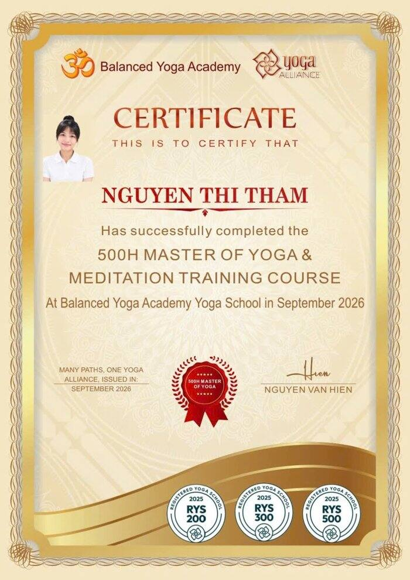
500h Master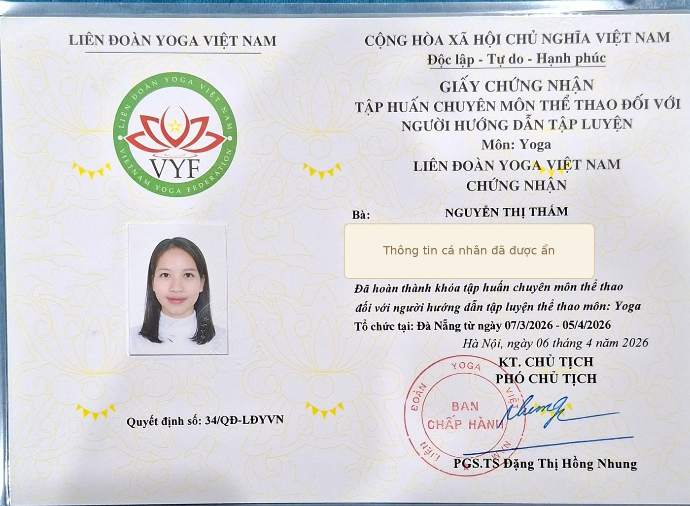
Liên đoàn Yoga VN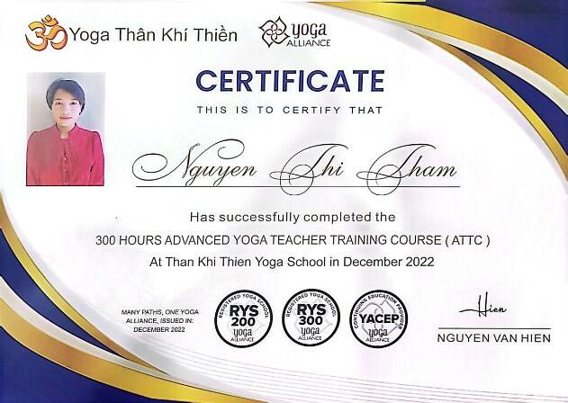
300h ATTC 200h Hatha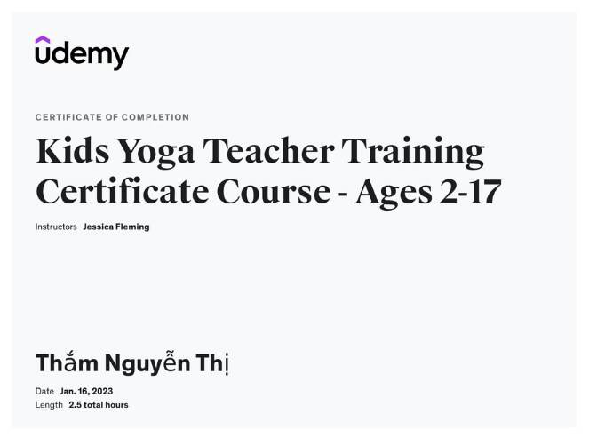
Kids Yoga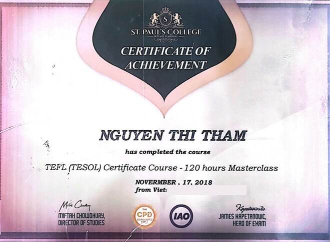
TEFL 120h🎓 Bằng cấp của Sophia, bấm vào ảnh để xem to
Xin chào, mình là Sophia! 🌿
Có những con đường mình không tự chọn, mà trái tim đã lặng lẽ chọn thay. Năm ấy, cô sinh viên Nguyễn Thị Thắm, sinh năm 1993, cầm trên tay tấm bằng cử nhân Ngôn ngữ Anh của Đại học Thương mại. Tấm bằng ấy mở ra rất nhiều cánh cửa. Nhưng mỗi lần bắt gặp một nụ cười trong veo hay một ánh mắt tròn xoe tò mò của trẻ nhỏ, lòng mình lại khẽ rung lên. Mình hiểu, nơi mình thuộc về là ở bên những đứa trẻ.
Mình bắt đầu bằng những lớp tiếng Anh cho các bạn nhỏ, học thêm chứng chỉ TEFL 120 giờ, và cứ thế hơn 6 năm đứng lớp. Các con dạy lại mình một điều giản dị: trẻ học nhanh nhất khi được vận động, được chơi, được cười và được là chính mình.
Năm 2017, yoga bước vào đời mình qua khóa Huấn luyện viên 200 giờ tại Golden Hearts Academy. Trên tấm thảm, mình học cách lắng nghe hơi thở và lắng nghe cơ thể. Rồi một câu hỏi cứ lớn dần trong mình: nếu những hơi thở chậm và những tư thế thăng bằng này đến được với trẻ con thì sao? Câu hỏi ấy dẫn mình đi tiếp, qua khóa 300 giờ Advanced và huấn luyện viên yoga trẻ em năm 2022, rồi chương trình 500 giờ Master of Yoga & Meditation, đều theo chuẩn Yoga Alliance. Năm 2026, mình hoàn thành khóa tập huấn chuyên môn dành cho người hướng dẫn tập luyện môn Yoga của Liên đoàn Yoga Việt Nam, tổ chức tại Đà Nẵng, và được Liên đoàn cấp giấy chứng nhận.
Khi hai dòng chảy tiếng Anh và yoga gặp nhau, chương trình Yoga song ngữ ra đời. Mỗi buổi học là một chuyến phiêu lưu nhỏ: các con hóa thành cái cây, ngôi sao hay chú rắn tí hon, vừa hít thở thật sâu vừa học tiếng Anh qua câu chuyện, bài hát và trò chơi.
Với mình, nuôi dưỡng một đứa trẻ giống như chăm một hạt mầm. Mình không kéo cho mầm lớn nhanh, chỉ kiên nhẫn tưới nước, đón nắng và tin vào mùa hoa của riêng con. Yoga là cách mình đồng hành cùng con, giúp con biết lắng nghe cơ thể, gọi tên cảm xúc và lớn lên bình an, tự tin từ bên trong.
Sau nhiều năm đứng lớp cùng trẻ nhỏ, mình tin yoga là một nhu cầu thật sự của tuổi thơ hôm nay. Các con ngồi học nhiều hơn, gặp màn hình sớm hơn và cũng đối diện với áp lực sớm hơn thế hệ trước. Yoga đáp lại những điều ấy một cách nhẹ nhàng:
Và vì yoga không có thắng thua, mỗi bé được tiến bộ theo nhịp của riêng mình. Đó chính là nền móng của sự tự tin.
Hôm nay, Sophia dành nhiều tâm huyết nhất cho việc đào tạo huấn luyện viên yoga trẻ em, để hạt mầm ấy được gieo xa hơn qua bàn tay của thật nhiều thầy cô và bố mẹ. Mình cũng dạy yoga chỉnh dáng học đường và yoga cho người lớn, trực tiếp hoặc online qua Zoom.
“Ở lớp của Sophia không có đúng hay sai. Chỉ có tiếng cười, những câu chuyện phiêu lưu và những hơi thở thật sâu.”
Nhắn cho SophiaĐào tạo người dạy yoga cho bé, chỉnh dáng cho học sinh và dạy trực tiếp cùng các bạn nhỏ.
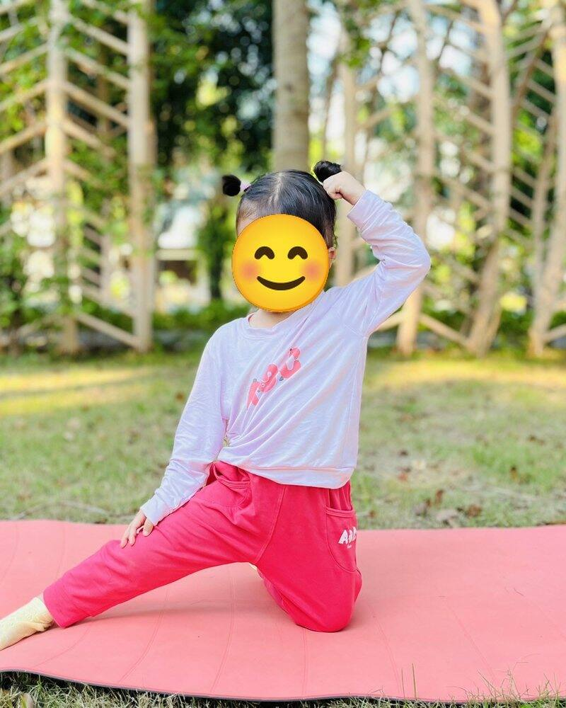
Khóa học trọng tâm cho giáo viên mầm non, HLV yoga và bố mẹ. Học phí 3.690.000đ (video quay sẵn) hoặc 8.000.000đ (online Zoom trực tiếp).
Xem chương trìnhBài tập giúp các bạn học sinh đứng thẳng, ngồi đúng, giảm gù lưng và mỏi cổ vai khi học.
Nhắn Zalo tư vấnLớp trực tiếp cho bé tại Ecopark và kèm riêng theo lịch của gia đình.
Nhắn Zalo đặt lịchChương trình yoga chuyên biệt cho trẻ em, dạy bằng tiếng Việt và tiếng Anh. Mỗi tiết học là một chuyến phiêu lưu giúp bé hứng khởi, tập trung và dẻo dai.

Bài tập kết hợp ghế nhỏ giúp bé rèn thăng bằng, sáng tạo và thói quen ngồi đúng cách.
Bóng bay nhiều màu sắc giúp bé thăng bằng, sáng tạo và thư giãn.
Chiếc gậy nhỏ giúp bé giữ thăng bằng, vươn dài cơ thể và phối hợp tay chân nhịp nhàng.
Vòng nhiều màu giúp bé vận động khéo léo, định hướng không gian và vui chơi cùng bạn.
9 câu thơ đố về cây chuối, mặt trăng, con rùa, cá voi… Bé nghe, đoán, rồi hóa thân thành tư thế. Có hộp bốc thăm và video.
Vừa đọc vừa tập giúp bé phát triển ngôn ngữ và trí tuệ cảm xúc (EQ).
Kết hợp hơi thở và tiếng cười giúp bé giải phóng căng thẳng, gắn kết với cô và bạn.
Hoạt động thư giãn giúp bé tập trung, đồng cảm, tự tin và đoàn kết.
Mỗi mùa một chủ đề: Trung thu, Halloween, Giáng sinh, Tết… bé vừa tập vừa khám phá ngày lễ thật vui.
Bé tập cùng bố mẹ, cô giáo hoặc bạn: nắm tay, tựa lưng, làm điểm tựa cho nhau, học hợp tác và tin tưởng.
Bé nhún nhảy, múa theo nhạc rồi “đóng băng” thành tư thế yoga: xả năng lượng, cảm thụ âm nhạc và tập trung.
Xương sụn, cột sống chữ C, hơi thở nhanh, não đang lớn: vì sao cô không quát, không bắt con làm y hệt, và cách dạy trên năm thể.
10 phút cuối buổi, cả lớp nằm yên, cô Sophia và các cô đến từng bạn xoa nhẹ đầu và mặt. Cơ thể chậm lại, con thấy mình được thương.
Có những tiết cô dành hẳn 15 phút massage cho từng bạn. Vừa vuốt ve, cô vừa thầm chúc con khỏe mạnh, bình an, được yêu thương.
12 động tác vuốt nhẹ trán, má, tai, có video và sơ đồ hướng vuốt. Bố mẹ và cô giáo mầm non làm theo được.
Dừng, gọi tên, thở. Tám bài thở, tư thế và trò chơi “Thời tiết trong lòng” giúp con đi qua cơn giận, cơn lo, có bố mẹ và cô ngồi bên.
Thẻ hình thay lời nói, không ép chạm, cho con chọn. 8 bài đơn giản, video tập cùng, và cách bố mẹ, cô giáo đồng hành cùng con.
Thang tự tin 5 bậc, 8 tư thế sức mạnh, hơi thở trước khi nói, trò chơi nhóm và lời khích lệ của bố mẹ, cô giáo. Có video tập cùng.
Ngồi bông sen, ôm trái đất, cầu vồng trên bóng: 8 bài, trò chơi, cách chọn bóng và giữ an toàn. Có video và ảnh lớp thật.
Khi con buồn kéo dài, có dấu hiệu trầm cảm: cách hướng dẫn con tập thật nhẹ, cách cha mẹ và cô giáo đồng hành, và khi nào cần gặp chuyên gia ngay.
Cô mở truyện tranh, các con theo chú tắc kè đổi màu qua 11 tư thế: cà chua, chanh, ngựa vằn, cá heo, cầu vồng… rồi thở chậm về lại màu của mình.
Bé khóc khi xa mẹ, sợ đi học: nghi thức chia tay, bài thở bóng bay, 5 tư thế nhẹ giúp con thấy vững, 7 ngày làm quen.
Ngủ đủ, nắng sớm, chân đất, rửa tay, bữa ăn thật và 10 phút yoga buổi sáng có đồng hồ. Kèm dấu hiệu cần đưa con đi khám.
Yoga không kéo dài xương, nhưng giúp con ngủ sâu, ăn ngon, đứng thẳng. Bài vươn cao như cây 10 phút và khi nào cần khám.
Dành cho người yêu trẻ mà còn ngại đứng lớp: 6 nỗi sợ hay gặp, một buổi học thật qua 16 ảnh, thử xử lý 4 tình huống trong lớp.
Một buổi 20 phút cho bé dưới 3 tuổi: tiếng chuông, vỗ tay, mèo bò, chó con, rắn hổ mang, nằm nghỉ. Có đồng hồ buổi học và thử chuông.
Bé khó ngủ, hay thức giấc: 6 tư thế thật nhẹ, hơi thở ngửi hoa thổi nến, massage và nghi thức 20 phút trước giờ ngủ. Cho bố mẹ và cô giáo mầm non.
Tắt máy không nước mắt với 4 bậc hạ cánh, đồng hồ chuyển cảnh, 8 bài yoga cho mắt, cổ, hơi thở, giỏ trò chơi thay màn hình. Có video tập cùng.
Con ngồi học, xem màn hình lâu, vai rụt? 8 tư thế, trò chơi 1 phút, cách kê góc học và video 5 động tác để con đứng ngồi thẳng nhẹ nhàng.
Cách hướng dẫn một buổi tập: vận động trước, tĩnh sau, lời ngắn, khen đúng lúc. Và cách cha mẹ, cô giáo đồng hành cùng con. Có video Đèn giao thông.
Con bồn chồn, hay lơ đãng? Cô cho chạy nhảy trước, rồi thăng bằng, thở con ong, nghe tiếng chuông tan, nằm yên. Có bài 10 phút cho bố mẹ ở nhà.
10 trò động cho con chạy, lò cò, bò trườn, thi đua và 10 trò tĩnh nghe, sờ, ngửi, chuyền bóng. Ghép thành khối 10 phút, có bốc thăm và đồng hồ.
Bữa ăn vui, xoa bụng có video, 8 tư thế nhẹ, trò chơi đĩa cầu vồng và thói quen đi vệ sinh. Cho bố mẹ và cô giáo mầm non.
Cô gõ chuông xoay một tiếng, cả lớp nghe đến khi tiếng ngân tắt hẳn mới giơ tay, rồi từng bạn được gõ. Tập lắng nghe, chờ lượt, thở chậm. Có video lớp thật.
Cả lớp che mắt, cô chơi một nhạc cụ, con lên tìm đúng nhạc cụ ấy. Trò chơi nhỏ giúp con biết lắng nghe và chờ lượt.
Ngân tiếng ong, Om ba tầng, chơi Sa Ta Na Ma bằng ngón tay, đọc lời chúc “Lokah Samastah” cuối buổi. Âm thanh giúp con thở chậm và tự làm mình dịu lại.
Lớp dưới 15 học sinh: 200.000đ / tiết 30 phút
Lớp từ 15 học sinh: 250.000đ / tiết 30 phút
🎁 Sophia tặng 1 buổi dạy demo cho các trường quan tâm.
Đặt buổi demo qua ZaloKhóa học trọng tâm của Sophia: phương pháp dạy yoga qua câu chuyện, trò chơi và hơi thở, học xong tự tin mở lớp yoga cho bé.
🏫 Sophia đồng hành đào tạo giáo viên cho các trường mầm non, trường học và trung tâm trên khắp cả nước. Ảnh: buổi tập huấn tại Hệ thống Mầm non Happy Kids, Quảng Ninh (09/2026).
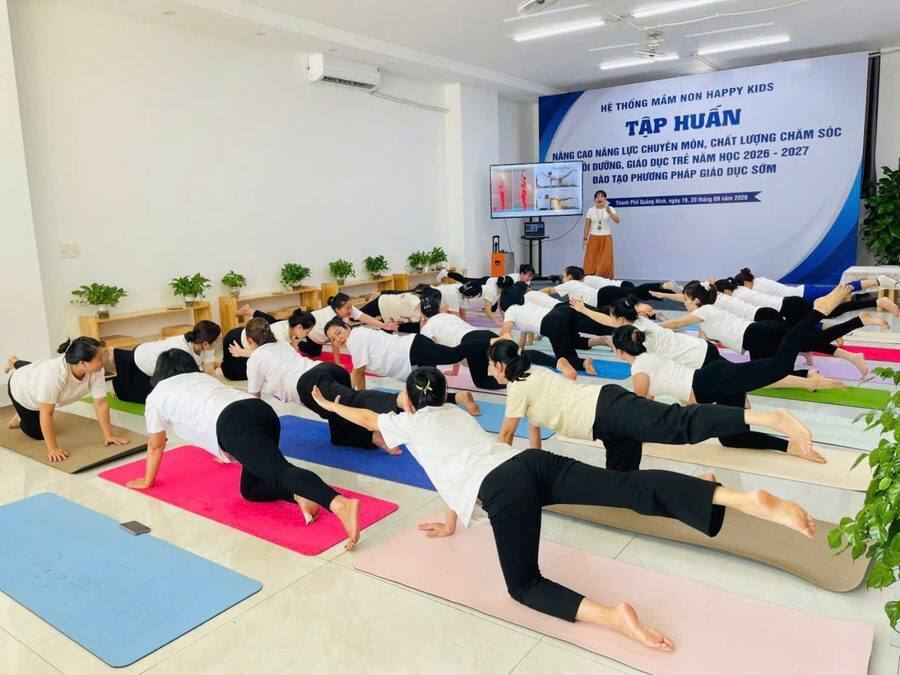
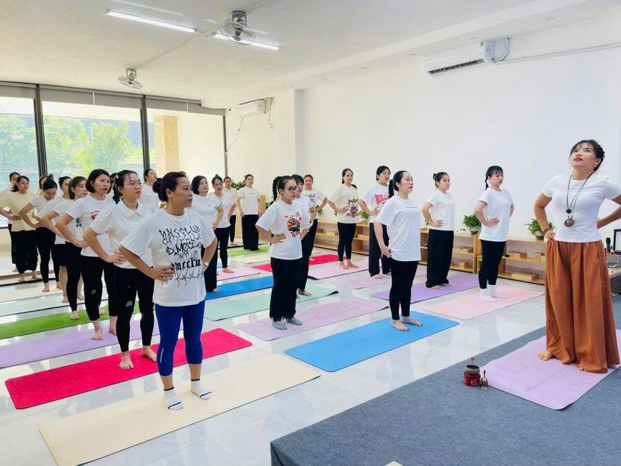
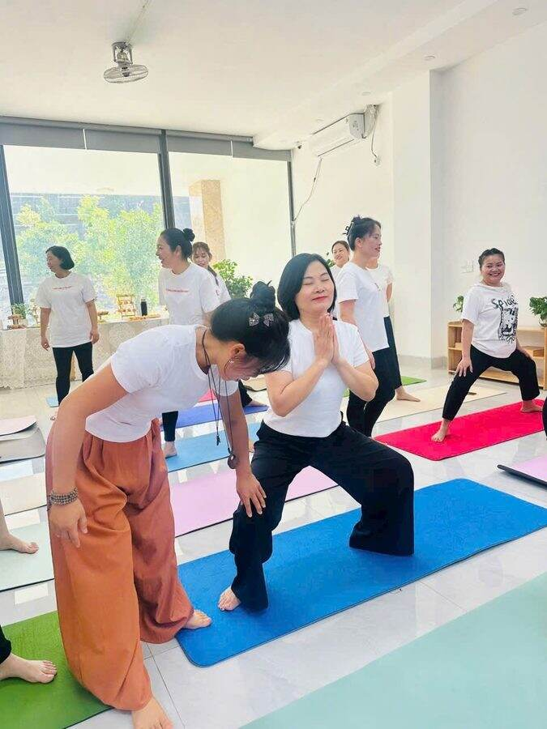
Khóa nền tảng: phương pháp dạy yoga cho bé 3 đến 6 tuổi qua câu chuyện, trò chơi, bài hát và hơi thở. Học xong tự tin mở lớp hoặc đưa yoga vào giờ học ở trường.
Học từ con số 0: 70 giờ yoga nền tảng (triết lý, tư thế, định tuyến, giải phẫu, hơi thở, phương pháp dạy) + 30 giờ Yoga trẻ em. 14 module trong 10 tuần, có thực tập dạy và chứng nhận cuối khóa.
🗺️ Xem lộ trình 100 giờ Nhắn Zalo nhận học phíDạy yoga cho bé bằng cả tiếng Việt và tiếng Anh: câu hô (cues) song ngữ, bài hát và câu chuyện tiếng Anh lồng trong tư thế, giúp bé vừa tập vừa học ngoại ngữ tự nhiên. Phù hợp giáo viên trường quốc tế, trường song ngữ và trung tâm tiếng Anh.
Nhắn Zalo để nhận thông tin sớm
Đăng ký nhận tinHọc xong rồi, bắt đầu từ đâu? Ba bài cô Sophia viết cho học viên: tìm lớp dạy đầu tiên, đứng lớp và giao tiếp với các con.
Dạy thử mười buổi, hồ sơ năm thứ, năm nơi có thể bắt đầu, buổi dạy thử, báo giá rõ ràng. Có danh sách việc cần làm và tin nhắn giới thiệu mẫu.
Đọc bàiNăm phút thở của cô, chỗ đứng, ánh mắt, ba mức giọng, hiệu lệnh ngắn, nhịp động tĩnh, bốn tình huống khó và danh sách an toàn trước giờ học.
Đọc bàiNgồi ngang tầm mắt, câu mở đầu làm quen, nói bằng hình ảnh, khen sự cố gắng thay vì khen thông minh, gọi tên cảm xúc, hỏi trước khi chạm.
Đọc bàiDành cho cả người chưa biết gì về yoga: mẹ bỉm sữa, giáo viên tiếng Anh, giáo viên mầm non. Học xong, bạn tự soạn và dạy một giờ yoga 30 đến 45 phút cho bé.
Cả khóa: 39 giờ lý thuyết · 48 giờ thực hành · 13 giờ thực tập dạy
Rút gọn từ chương trình 200 giờ: phần tự tập học nhanh; định tuyến, giải phẫu, triết lý học kỹ. Mỗi nội dung đều nối sang cách dạy cho trẻ.
Lịch sử ngắn; 8 nhánh yoga của Patanjali; Yama, Niyama thành giá trị sống cho bé (tử tế, trung thực, biết ơn); đạo đức nghề HLV.
🎯 Kể được 1 bài học giá trị sống bằng ngôn ngữ của trẻ
Chuỗi Chào mặt trời; một bài tập 45 phút tập hằng ngày.
🎯 Tự tập đều, ghi nhật ký tập 30 buổi trong khóa
30 tư thế nền tảng chia 6 nhóm: đứng, thăng bằng, gập trước, ngửa sau, vặn xoắn, nằm và đảo ngược nhẹ; lỗi hay gặp; chỉnh bằng lời và bằng đạo cụ.
🎯 Làm mẫu đúng 30 tư thế; nhìn ra lỗi và chỉnh an toàn
Xương, khớp, cột sống, nhóm cơ chính, hệ hô hấp; cơ thể trẻ khác người lớn ra sao; chấn thương hay gặp và khi nào không nên tập.
🎯 Giải thích được vì sao mỗi tư thế an toàn hoặc cần tránh với trẻ
Các kiểu thở cơ bản; thiền ngắn; thư giãn cuối buổi.
🎯 Hướng dẫn được 3 bài thở và 1 bài thư giãn
Câu hô (khẩu lệnh); giọng nói; sắp xếp thứ tự một buổi tập; quan sát lớp; an toàn.
🎯 Dạy một đoạn 20 phút cho nhóm bạn học
8 học phần trong giáo trình Kỹ năng dạy Yoga Kids của cô Sophia: dạy bé qua câu chuyện, trò chơi, bài hát và hơi thở.
Lợi ích, lưu ý; khác biệt giữa trẻ em và người lớn.
Khả năng học yoga; phát triển thể chất và tâm lý theo lứa tuổi.
🎯 Chọn đúng bài cho từng độ tuổi
Phép thở, tư thế và cách hướng dẫn cho trẻ.
🎯 Đổi tư thế người lớn thành tư thế cho bé
8 phương pháp giảng dạy, trò chơi, hoạt động chánh niệm.
🎯 Dùng được cả 8 phương pháp
Quản lý thời gian, giữ năng lượng và trật tự lớp.
🎯 Viết được giáo án 1 buổi
Làm quen, gây hứng thú, tạo sự tin tưởng.
🎯 Bắt chuyện và giữ được sự chú ý của bé
Canva, viết bài, làm video, kế hoạch đăng bài.
🎯 Tự quảng bá lớp của mình
Dạy mẫu với 8 phương pháp.
🎯 Dạy trọn một buổi 30 đến 45 phút
Học phí và hình thức học: cô Sophia tư vấn riêng qua Zalo 0349 270 304.
💬 Nhắn Zalo để nhận chi tiết học phí và hình thức họcBên cạnh lớp trực tiếp, Sophia mở các khóa HLV Yoga Kids online. Học viên ở xa vẫn được cô hướng dẫn, xem giáo án mẫu và nhận chứng nhận như lớp trực tiếp.
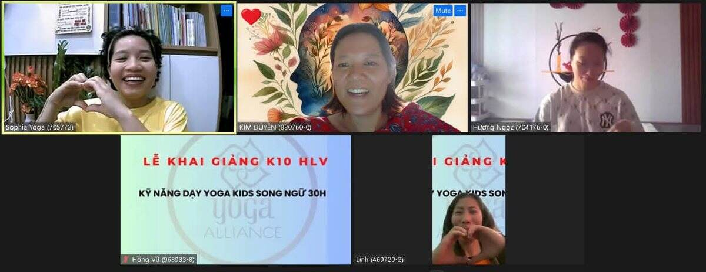
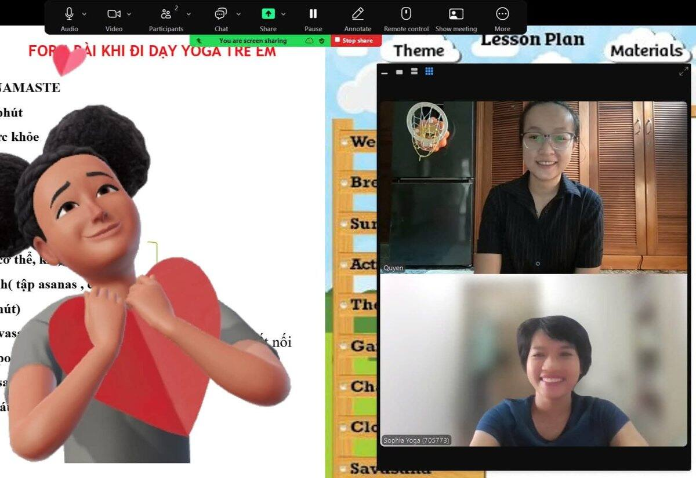
“Biết ơn cô nhiều, tập xong thấy người khỏe và nín (thở) cũng lâu hơn lúc chưa tập, hơi nín lúc sau gấp đôi lúc chưa tập. Biết ơn cô rất nhiều ❤️🌹”
Chị Trâm, học viên lớp online
“Cảm ơn cô giáo rất nhiều, cô đã chia sẻ hướng dẫn rất chi tiết và tận tình ạ.”
Chị Bích Nga, học viên lớp online
“Chỉ học qua video nhưng cảm giác thích lắm, không bị chán. Này mà học với cô trực tiếp chắc nhiều năng lượng lắm 😁”
Chị Thùy Trang, học viên
Trích tin nhắn học viên gửi cô Sophia qua Zalo.
Tập cùng Sophia theo cách phù hợp với bạn: tự học tại nhà, học trực tiếp, hoặc học online qua Zoom.

Kiến thức về pranayama, gom về một chỗ: thở bụng, hơi thở bốn thì, thở luân phiên mũi, Ujjayi, Kapalabhati, thở ong vo ve, thở làm mát, thở bễ, thở mũi phải, thở mũi trái và nhiều bài khác. Mỗi bài có nguồn gốc, lợi ích, ai không nên tập, cách làm, kèm video tập cùng cô.
📖 Xem các phép thởXương, khớp, cơ làm việc thế nào: cột sống bốn đường cong, sáu kiểu khớp, cơ làm việc theo cặp, đau nào nên dừng, giải phẫu thế Cây. Và cách đổi thói quen đi, đứng, nằm, ngồi cho một sức khỏe cân bằng.
📖 Đọc bàiThân, khí, trí, thượng trí, phúc lạc: năm thể theo triết lý yoga, và cách dùng vận động, hơi thở, suy nghĩ để đổi cảm xúc, năng lượng, cơ thể mỗi ngày. Có bài tập 5 phút đi qua năm thể.
📖 Đọc bàiGià, cứng người, đàn ông, người bận có tập được không: nghiên cứu khoa học nói gì, khi nào cần hỏi bác sĩ trước, cách tìm người thầy tốt, 12 asana cơ bản và các biến thể, nên mặc gì khi tập.
📖 Đọc bàiNghiên cứu khoa học nói gì: yoga giúp được gì, không làm được gì, vì sao tập bụng không làm tan riêng mỡ bụng. Năm điều đi cùng nhau: ăn uống, nghỉ ngơi, hít thở, tinh thần lạc quan và tập asana đều đặn.
📖 Đọc bàiĂn gì để thân nhẹ, tâm an: vì sao yoga khuyến khích ăn chay, ba loại thực phẩm Sattvic, Rajasic, Tamasic tác động đến con người thế nào, và 10 nguyên tắc dinh dưỡng.
📖 Đọc bàiCây yoga một gốc nhiều cành: 22 trường phái cổ điển và các phong cách hiện đại, kèm nghiên cứu khoa học. Trường phái nào phổ biến nhất, hợp với ai, tập thế nào, ai nên thận trọng.
📖 Đọc bàiLuân xa là gì, hiểu sao cho tỉnh táo, không mê tín: phân tích 7 luân xa theo truyền thống yoga (màu, hoa sen, nguyên tố, chức năng), cách dùng để cân bằng cơ thể, cuộc sống và nuôi dạy con cân bằng.
📖 Đọc bàiTuyến giáp, tụy, thượng thận, tuyến yên... mỗi tuyến làm gì: yoga giúp được gì và không giúp được gì cho nội tiết, bài tập 25 phút, cách tập phục hồi sau căng thẳng, sau bệnh, sau sinh, khi nào cần hỏi bác sĩ.
📖 Đọc bàiĐau vai gáy, đau lưng, táo bón đến từ đâu: nhìn một ngày làm việc qua 5 điểm chính của yoga và giới luật, rồi phục hồi bằng tư thế, hơi thở, thư giãn, ăn uống, thói quen suy nghĩ. Có chuỗi 10 phút tại ghế.
📖 Đọc bàiPhục hồi trên cả 5 thể, không chỉ bằng tư thế: vì sao đau, đổi lối sống, hơi thở, giấc ngủ, cách nghĩ, 15 tư thế nhẹ cho cổ vai gáy và lưng dưới, tư thế nên tạm gác, và khi nào cần đi khám (thoát vị, tê tay chân).
📖 Đọc bàiTập thế nào cho hợp với từng “mùa” của cơ thể: 4 giai đoạn chu kỳ kinh nguyệt, đau bụng kinh, 3 tam cá nguyệt khi mang bầu, phục hồi sau sinh (tách cơ bụng, sàn chậu), tư thế nên tránh và khi nào hỏi bác sĩ.
📖 Đọc bàiBốc hỏa, mất ngủ, xương mỏng dần, tâm trạng chòng chành: cơ thể đang đổi gì, và cách đi qua chặng này nhẹ nhàng hơn bằng lối sống cân bằng trên năm thể. Thở dịu cơn nóng, 9 tư thế cho xương và giấc ngủ, có video tập cùng cô, lưu ý loãng xương.
📖 Đọc bàiVì sao nằm mãi không ngủ được, hay tỉnh giữa đêm: phục hồi giấc ngủ bằng cả lối sống cân bằng trên năm thể (thân, khí, tâm, trí, tinh thần). Hơi thở chậm, một ngày thuận giấc, tư thế buổi tối, quét cơ thể, và khi nào nên gặp bác sĩ.
📖 Đọc bàiỞ tuổi trung niên và cao tuổi, vì sao đầu hay đau: thần kinh, huyết áp, cổ vai gáy, giấc ngủ, nội tiết, căng thẳng, thuốc giảm đau. Dấu hiệu nguy hiểm cần đi khám ngay, tư thế nhẹ an toàn, hơi thở, và phục hồi trên cả năm thể.
📖 Đọc bàiHuyết áp cao thường không đau, không báo trước: con số nói gì, vì sao nó tăng lặng lẽ, và chăm sóc tim chủ động bằng lối sống cân bằng trên năm thể. Thở chậm sáu hơi mỗi phút, bớt muối, chuỗi tư thế nhẹ, những điều nên tránh khi tập, và khi nào cần gặp bác sĩ.
📖 Đọc bàiĐầy hơi, táo bón, ợ chua, đau dạ dày: vì sao bụng hay khó chịu, và cách phục hồi bằng cả lối sống cân bằng trên năm thể. Ăn chậm, thở bụng, xoa bụng theo đường đi của ruột, 8 tư thế nhẹ, và những dấu hiệu cần đi khám ngay.
📖 Đọc bàiTiền tiểu đường, mỡ máu cao, vòng eo to dần: điều gì đang diễn ra trong cơ thể, cách đọc tờ xét nghiệm cho bớt sợ, và chăm sóc chủ động bằng lối sống cân bằng trên năm thể. Ăn theo thứ tự, đi bộ sau ăn, ngủ đủ, thở ra dài, 8 tư thế nhẹ, lưu ý khi đang dùng thuốc.
📖 Đọc bàiGối kêu, lưng cứng, đứng lên phải vịn, sợ ngã: tập an toàn trên ghế và bên tường, giữ chân khỏe và đi vững. Tư thế nên tránh khi loãng xương, thoái hóa khớp, huyết áp cao, đổi lối sống trên cả năm thể, và khi nào cần đi khám.
📖 Đọc bàiKhác nhau ở đâu, lợi và hại: bảng so sánh, cái được và cái chưa tốt của lớp Zoom, góc nhìn của người mới, người bận, người có bệnh lý, người ở xa. Kèm mẹo tập Zoom an toàn.
📖 Đọc bàiXuân, hạ, thu, đông; sáng, trưa, chiều, tối: tập kiểu gì cho thuận âm dương, không hao năng lượng. Theo Hoàng Đế Nội Kinh và Ayurveda, có tư thế, hơi thở, cường độ, giờ tập và bảng tóm tắt.
📖 Đọc bàiKhông phải thế khó, thế đẹp: yoga là con đường quay vào bên trong. 5 điểm cho sức khỏe toàn diện: ăn uống, nghỉ ngơi, tập luyện, hít thở đúng cách, tập trung và thiền định.
📖 Đọc bàiCùng một vùng đất, cùng một hơi thở: tám chi yoga và Bát chánh đạo, Yama và ngũ giới, thiền, quán niệm hơi thở và pranayama, vô thường, giải thoát, từ bi. Và cả những chỗ khác nhau, kể nhẹ nhàng, tôn trọng cả hai.
📖 Đọc bàiLặp lại một âm thanh để tâm được về nhà: mantra bắt đầu từ kinh Vệ Đà và Phật giáo ra sao, vì sao tụng làm hơi thở chậm và đầu óc lắng lại (kèm nghiên cứu). Om, Om Mani Padme Hum, So Hum, Lokah Samastah có phiên âm, nghĩa, cách đọc, chuỗi hạt 108 để lần cùng, video ngân Om và cách dạy các con.
📖 Đọc bàiĐi sâu từng câu: ý nghĩa âm Om theo Upanishad và Yoga Sutra, tầng nghĩa và tầng chữa lành của Om Namo Guru Dev Namo, Om Shanti, Gayatri, Asato Ma, Om Namah Shivaya... Cách nhấn âm nặng nhẹ, ý nghĩa Namaste, cách hát gọi và đáp trong vòng tròn. Có công cụ ngân Om, video và nghiên cứu.
📖 Đọc bàiKriya là gì? Neti rửa mũi, Dhauti, Nauli, Basti, Kapalabhati và Trataka nhìn ngọn nến. Cách làm an toàn, ai không nên làm, tập lúc nào, lợi ích, nguồn gốc và khoa học nói thật tới đâu.
📖 Đọc bàiKhi đầu óc không chịu nghỉ, ngực lúc nào cũng như có gì đè: điều gì xảy ra trong cơ thể, phục hồi bằng lối sống cân bằng trên năm thể, hơi thở ra dài, một ngày nhẹ lòng, chuỗi 15 phút, cách đứng vững khi cơn lo dâng lên, và khi nào nên gặp bác sĩ.
📖 Đọc bàiNgủ rồi vẫn mệt, chiều nào cũng cạn pin, kiệt sức vì việc làm và việc nhà: mệt đến từ đâu, nạp lại năng lượng bằng lối sống cân bằng trên năm thể. Pin năng lượng, nhịp một ngày, bảy kiểu nghỉ, hơi thở có hẹn giờ, Yoga Nidra có video, 8 tư thế phục hồi, và khi nào nên đi khám.
📖 Đọc bàiCứ giao mùa là ho, sổ mũi, cả nhà thay nhau ốm: chăm hô hấp chủ động bằng lối sống cân bằng trên năm thể. Thở bằng mũi, thở chậm, một ngày cho lá phổi khỏe, chuỗi 15 phút mở lồng ngực, tập thế nào khi đang ốm, và khi nào cần gặp bác sĩ.
📖 Đọc bàiNhìn màn hình cả ngày, chiều về mắt khô, mỏi, nhòe: chăm đôi mắt chủ động trên năm thể. Chớp mắt, nhìn xa 20-20-20, ra ngoài trời, ngủ đủ, bài tập mắt theo chấm vàng, chuỗi 10 phút cổ vai, lưu ý cho người glôcôm, và khi nào cần gặp bác sĩ mắt.
📖 Đọc bàiVài phút vỗ nhẹ dọc tay, chân, vai, lưng: vỗ là gì, sơ đồ vị trí vỗ, bàn tay và lực vỗ, cách vỗ từng bước, bài vỗ cùng Sophia 4 phút, nên vỗ trước hay sau khi tập, lợi ích thật tới đâu và ai cần thận trọng.
📖 Đọc bàiCơ thể như một cỗ xe: dầu bôi trơn, pin, làm mát, nhiên liệu và người lái. Thêm 8 lưu ý khi tập: chú ý vào bên trong, nhận biết hơi thở, vào và ra thế chậm rãi, lắng nghe cơn đau, tập đều, kiên nhẫn.
📖 Đọc bàiMột mục 6 bài: 5 giới (Yama), 5 luật (Niyama) là gì, và cách sống với chúng trong hôn nhân, công việc, nuôi con, khi là HLV yoga, trong gia đình.
📖 Vào mục Giới và luật10 nguyên tắc định tuyến cơ bản: bàn chân, đầu gối, hông, cột sống, vai cổ, bàn tay, cổ tay, góc vuông, thẳng hàng, song song. Có hình minh hoạ đúng và chưa đúng, kèm cách tự kiểm tra ngay trên thảm.
📖 Đọc bàiĐịnh xem giờ mà hai mươi phút sau vẫn còn lướt, cổ mỏi, mắt cay, đầu lúc nào cũng ồn: chuyện gì đang xảy ra, đồng hồ màn hình, ba phút thu nhiếp giác quan có hẹn giờ, nhắc 20-20-20 cho mắt, chuỗi 12 phút cho cổ vai, một ngày ít màn hình, và khi nào nên đi khám.
📖 Đọc bàiNói rồi mới hối hận, sáng nào cũng to tiếng với con: khi giận thân mình ra sao, nhiệt kế cơn giận, 90 giây thở có hẹn giờ, gọi tên cảm xúc, giới Ahimsa trong gia đình, chuỗi 10 phút hạ nhiệt, và khi nào cần tìm hỗ trợ.
📖 Đọc bàiĂn vội trước màn hình, ăn vì buồn, tối nào cũng mở tủ lạnh: vì sao mình ăn khi không đói, thang đói no, đói thật hay đói lòng, ăn chậm 20 phút có hẹn giờ, dinh dưỡng giản dị, giới luật quanh bàn ăn, chuỗi tư thế cho vùng bụng, và khi nào nên đi khám.
📖 Đọc bàiLúc nào cũng online mà tối nào cũng thấy một mình: cô đơn là gì, ba câu hỏi nhỏ để tự nhìn lại, cô đơn trên năm thể, năm phút thiền gửi lòng tốt có hẹn giờ, chuỗi 15 phút mở lòng, bảy ngày bảy lần chạm, và khi nào cần tìm hỗ trợ.
📖 Đọc bàiĐặt bớt gánh nặng xuống: cổ gánh bao nhiêu ký khi cúi, hơi thở trước tư thế sau, sáu tư thế đơn giản, chuỗi 12 phút có hẹn giờ, đổi lối sống, tám bậc yoga và khi nào cần đi khám.
📖 Đọc bàiKhi mất ngủ đã thành con đường mòn: vòng lặp mất ngủ, tính hiệu suất giấc ngủ, thở ra dài có hẹn giờ, chuỗi 15 phút trước khi ngủ, một ngày thuận tự nhiên và khi nào cần đi khám.
📖 Đọc bàiChậm lại để đứng vững: ba nguồn tin giữ thăng bằng, đứng dậy ba nhịp, hơi thở khi chao đảo, tư thế nhẹ đầu luôn trên tim, mẹo say xe và dấu hiệu cần cấp cứu.
📖 Đọc bàiLưng được đỡ, cơ thể tự lành: đĩa đệm có thể tự hồi phục, đèn giao thông nghe cơ thể, thở 360 độ, sáu tư thế an toàn, chuỗi 12 phút, những gì tạm tránh và khi nào cần cấp cứu.
📖 Đọc bàiSức khỏe nam giới. Vì sao hay dậy đêm, ô tự soi thói quen uống, sàn chậu và hơi thở có hẹn giờ, chuỗi 12 phút buổi chiều, đổi lối sống và khi nào cần đi khám.
📖 Đọc bàiSức khỏe nam giới. Mạch nhỏ báo động sớm cho tim, sáu thói quen lấy đi sức nam, hơi thở từ căng sang nghỉ, tập sàn chậu, chuỗi 15 phút và khi nào đi khám.
📖 Đọc bàiSức khỏe nam giới. Đo vòng bụng, tính đơn vị cồn mỗi tuần, hơi thở cho lá gan, sáu tư thế, chuỗi 15 phút buổi sáng, đổi lối sống và dấu hiệu cần đi khám ngay.
📖 Đọc bàiSức khỏe nam giới. Đường thở khi ngủ, bảng tự kiểm tra STOP-Bang, thở bằng mũi, mười phút tập lưỡi họng có hẹn giờ, nằm nghiêng và khi nào cần đo giấc ngủ.
📖 Đọc bàiSức khỏe nam giới. Acid uric từ đâu ra, đĩa ăn đèn giao thông, làm gì khi đang lên cơn, sáu tư thế giữa các đợt, chuỗi 12 phút, đổi lối sống và khi nào đi khám.
📖 Đọc bàiSức khỏe phụ nữ trung niên. Ô tự soi nguy cơ, hơi thở giữ lưng cao, những tư thế cần tránh, sáu tư thế an toàn, chuỗi 12 phút, ngôi nhà không ngã và khi nào đi đo xương.
📖 Đọc bàiSức khỏe phụ nữ trung niên. Mình thuộc kiểu són tiểu nào, tập sàn chậu có hẹn giờ, khóa trước khi ho, lịch dạy lại bàng quang, chuỗi 12 phút và khi nào đi khám.
📖 Đọc bàiSức khỏe nam giới. Đọc phiếu xét nghiệm mỡ máu, hơi thở hạ nhiệt, sáu tư thế cho cơ to, chuỗi 15 phút, đổi món không bỏ ăn và dấu hiệu cần cấp cứu.
📖 Đọc bàiDay ấn huyệt. Bản đồ 22 huyệt bấm được, lực bao nhiêu là đủ, chuỗi tự day trước khi ngủ và day cho người thân có hẹn giờ, mùi hương, chống chỉ định và khi nào cần đi khám.
📖 Đọc bàiDẫn khí theo hơi thở. Vì sao hít vào nghĩ về ngực, thở ra xuống bụng, lên đỉnh đầu, qua lòng bàn chân, bàn tay. Khoa học và yoga cổ nói gì, hình động tập cùng, bài tập 12 phút.
📖 Đọc bàiVideo và tài liệu cho người đã biết tập, tập theo video bất cứ lúc nào tại nhà 369.000đ / bộ.
Nhắn Zalo nhận link họcKèm 1 kèm 1 (PT) theo mục tiêu riêng 500.000đ / giờ. Nhận book lịch dạy cho sự kiện, team building, resort.
Đặt lịchHọc trực tiếp qua Zoom, Sophia nhìn và chỉnh tư thế cho từng học viên như ở lớp thật.
Hỏi lịch học online10 buổi học thở từ nền tảng giúp giảm căng thẳng, tập trung hơn và ngủ ngon hơn. Phù hợp cả người mới bắt đầu.
Nhắn Zalo đăng ký70 tư thế mới, nối tiếp bộ 65 thẻ: quỳ, nằm ngửa, nằm sấp, ngồi, đảo ngược nhẹ và vặn xoắn. Thẻ A5 hai mặt, tên song ngữ Anh – Việt có phiên âm, mặt sau hướng dẫn từng bước. Thẻ PDF 210.000 đồng, bộ thẻ cứng 420.000 đồng.
👀 Xem thẻ và đặt muaKhóa học quay sẵn trên YouTube: luyện phát âm, các cấu trúc tiếng Anh và những câu hô (cue) để huấn luyện viên yoga dạy yoga hoàn toàn bằng tiếng Anh.
Học viên được tặng thêm app Sophia Yoga English: luyện phiên âm, lật thẻ tư thế, nghe lời hô mẫu, chơi trò chơi từ vựng và luyện giao tiếp ngay trên điện thoại. Tài khoản app do Sophia cấp qua Zalo.
Học phí 399.000đ. Cách đăng ký: 1. Điền form đăng ký 2. Quét mã QR chuyển khoản (nội dung: TAHLV + số điện thoại) 3. Sophia gửi mật khẩu vào học qua Zalo.
 6 video tiết yoga online qua Zoom, hô hoàn toàn bằng tiếng Anh
Từ lúc ngồi thở đầu giờ đến lúc nằm thư giãn cuối buổi. Nghe để biết câu hô nối với nhau thế nào trong một tiết thật. Mỗi video 15 đến 57 phút.
▶ Xem 6 video
6 video tiết yoga online qua Zoom, hô hoàn toàn bằng tiếng Anh
Từ lúc ngồi thở đầu giờ đến lúc nằm thư giãn cuối buổi. Nghe để biết câu hô nối với nhau thế nào trong một tiết thật. Mỗi video 15 đến 57 phút.
▶ Xem 6 video
Mỗi bước một thẻ: tư thế, nhịp thở, cách tập và lưu ý cho người lớn. Song ngữ Việt Anh, có phiên âm. Hợp để HLV luyện tên tư thế và câu hô bằng tiếng Anh. Xem ngay hoặc tải PDF in ra.
Xem bộ thẻ Tải PDF miễn phí65 thẻ A5 hai mặt: nằm, ngồi, đứng, đảo ngược. Tên song ngữ Anh – Việt có phiên âm, mặt sau hướng dẫn từng bước. Thẻ PDF 195.000 đồng, bộ thẻ cứng 390.000 đồng.
👀 Xem thẻ và đặt mua70 tư thế mới, nối tiếp bộ 65 thẻ: quỳ, nằm ngửa, nằm sấp, ngồi, đảo ngược nhẹ và vặn xoắn. Thẻ A5 hai mặt, tên song ngữ Anh – Việt có phiên âm, mặt sau hướng dẫn từng bước. Thẻ PDF 210.000 đồng, bộ thẻ cứng 420.000 đồng.
👀 Xem thẻ và đặt muaTất cả các khóa đào tạo và dịch vụ của Sophia. Nhắn Zalo để được tư vấn và nhận lịch khai giảng.
Đào tạo huấn luyện viên yoga trẻ em 30 giờ.
3.690.000đ video quay sẵn
8.000.000đ Zoom trực tiếp
Nhắn Zalo70 giờ yoga nền tảng + 30 giờ Yoga trẻ em, 10 tuần, có thực tập dạy. Xem lộ trình
Nhắn Zalo nhận học phí và hình thức học
Nhắn ZaloDạy yoga cho bé bằng tiếng Việt và tiếng Anh, câu hô song ngữ, hợp trường quốc tế và song ngữ.
Nhắn Zalo để nhận thông tin
Nhắn ZaloVideo và tài liệu cho người đã biết tập: chuỗi bài theo tuần giúp giữ cơ thể dẻo dai, lưng khỏe, ngủ ngon. Tập tại nhà bất cứ lúc nào.
369.000đ
Nhắn ZaloGói chuyển giao đào tạo kỹ năng dạy yoga cho trẻ em tại các cơ sở trường học. Xem tài liệu đi kèm
Inbox để nhận báo giá
Nhắn ZaloPhát âm, cấu trúc câu và câu hô (cue) để dạy yoga bằng tiếng Anh. Khóa quay sẵn trên YouTube.
399.000đ video quay sẵn
📝 Đăng ký ngayHọc thở từ nền tảng: thở bụng, thở chậm, thở thư giãn. Giúp giảm căng thẳng, tập trung hơn và ngủ ngon hơn. Phù hợp cả người mới.
Liên hệ Zalo
Nhắn ZaloZalo: 0349 270 304
Master of Yoga & Meditation, chuẩn Yoga Alliance
Đồng hành đào tạo giáo viên cho các trường mầm non và trung tâm
Học tại Ecopark hoặc online ở bất cứ đâu
Nhận chứng nhận sau khóa HLV Yoga trẻ em 30h
Những giờ học thật vui, thật bình yên của các bạn nhỏ.
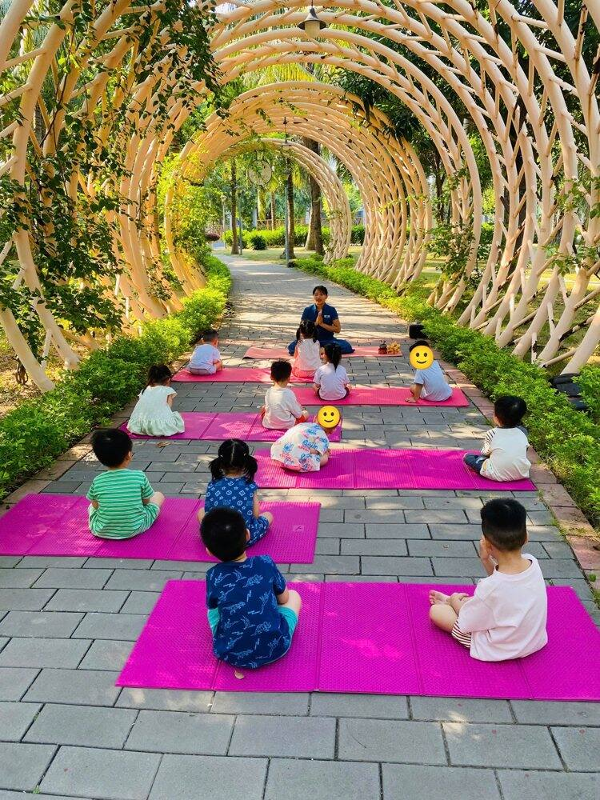


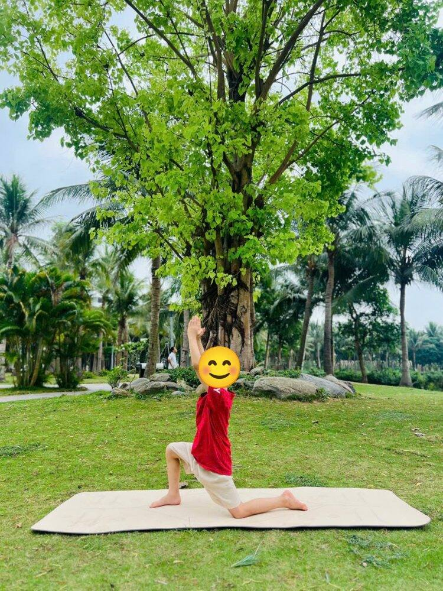
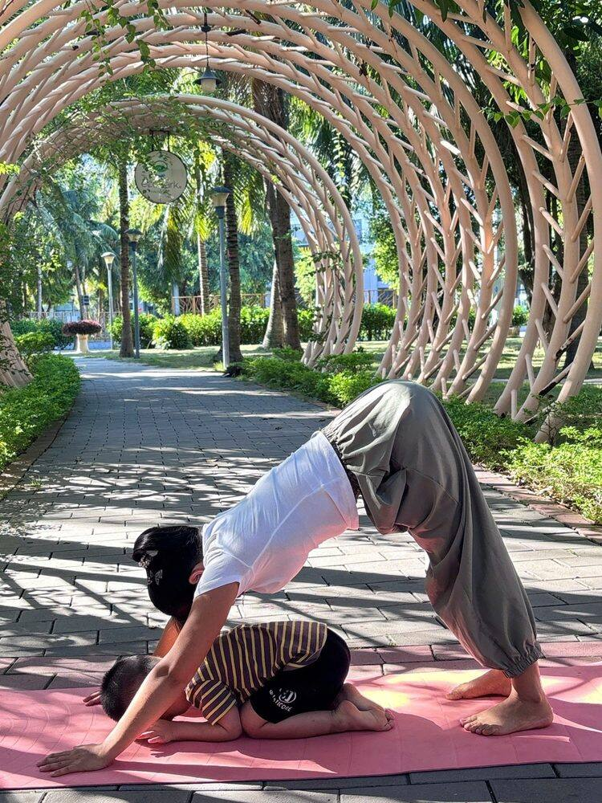


Để bảo vệ các bé, khuôn mặt trong ảnh được che bằng hình mặt cười.
Giáo án, trò chơi, câu chuyện và những ý tưởng, lời khuyên của cô Sophia để bố mẹ và thầy cô tập cùng bé.
Dạy thử mười buổi, hồ sơ năm thứ, năm nơi có thể bắt đầu, buổi dạy thử, báo giá rõ ràng. Có danh sách việc cần làm và tin nhắn giới thiệu mẫu.
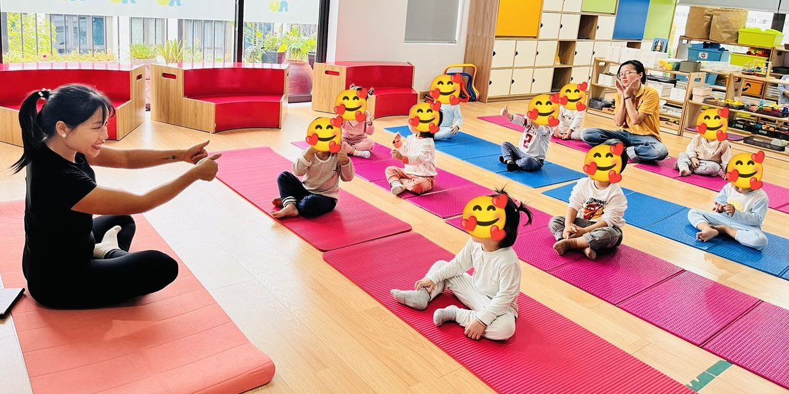
Năm phút thở của cô, chỗ đứng, ánh mắt, ba mức giọng, hiệu lệnh ngắn, nhịp động tĩnh, bốn tình huống khó và danh sách an toàn trước giờ học.
Ngồi ngang tầm mắt, câu mở đầu làm quen, nói bằng hình ảnh, khen sự cố gắng thay vì khen thông minh, gọi tên cảm xúc, hỏi trước khi chạm.
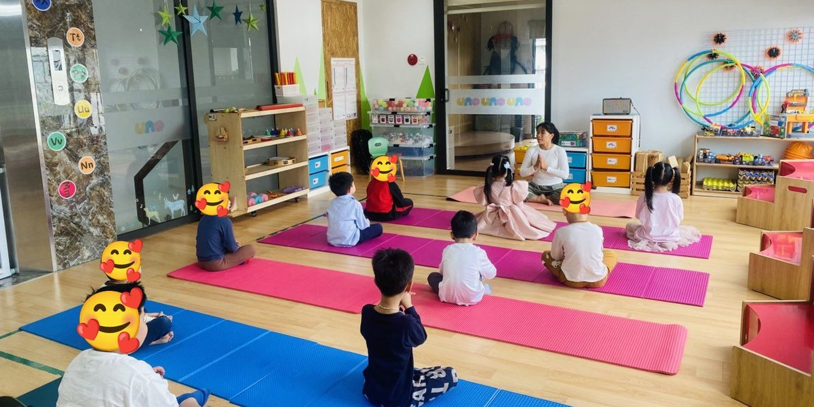
Thơ đố lục bát, đồng dao dẫn vào tư thế: con bướm, cây chuối, trăng khuyết, con ngựa, chó úp mặt, cá heo, con rùa, cá voi, cây kim. Có hộp bốc thăm và video.
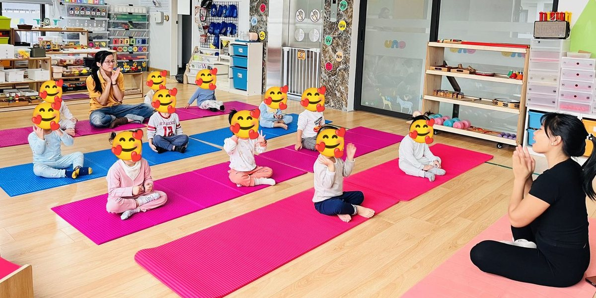
Giải phẫu và tâm sinh lý của trẻ, vì sao không quát, không bắt giống y hệt cô, và cách dạy yoga trẻ em trên năm thể. Có minh họa cột sống, thẻ đổi câu nói, nhịp tiết học 30 phút.
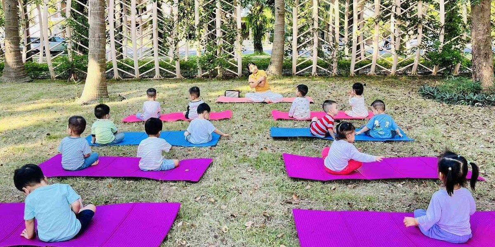
Bao nhiêu phút là vừa, 4 bậc tắt máy nhẹ nhàng, đồng hồ chuyển cảnh, 8 bài yoga cho mắt và cổ, giỏ trò chơi thay màn hình, video tập cùng con.
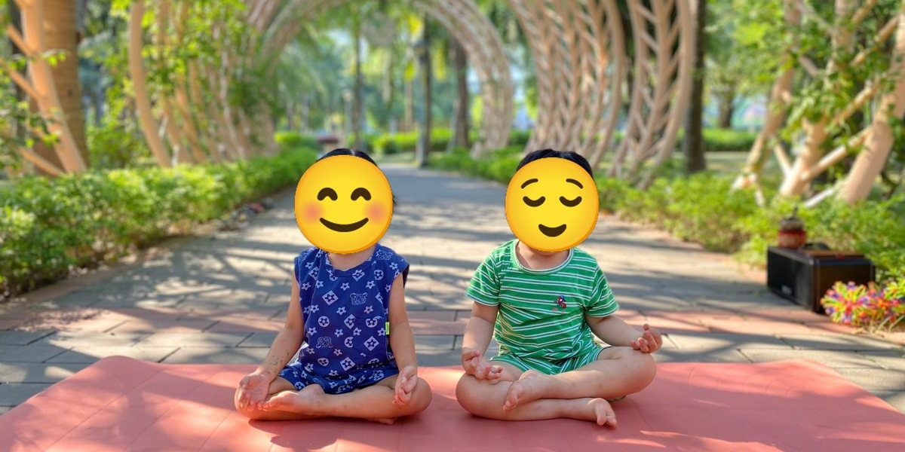
Om, So Hum, Om Mani Padme Hum, Lokah Samastah: nghĩa, cách đọc, nghiên cứu về não bộ, chuỗi hạt 108 lần cùng cô, trò chơi Sa Ta Na Ma và kênh nghe thêm.
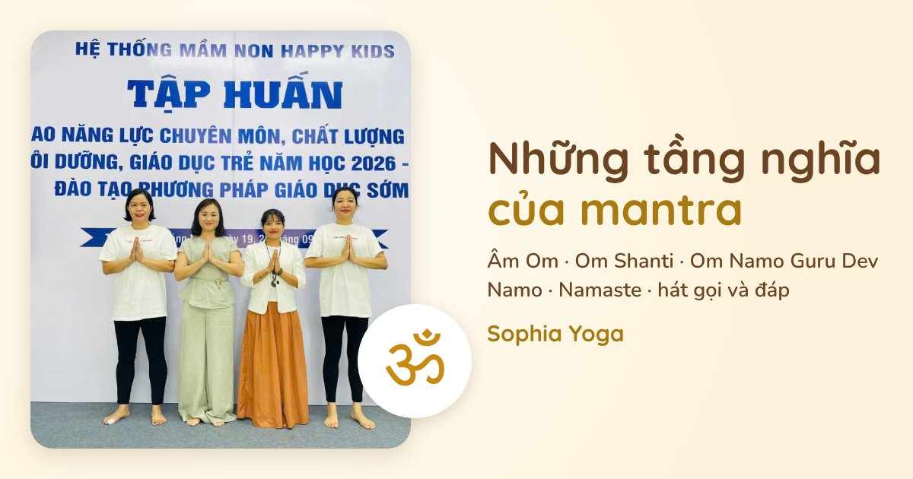
Ý nghĩa âm Om, 10 câu mantra từng tầng nghĩa, nhấn âm nặng nhẹ, Namaste là gì, cách dẫn một vòng hát gọi và đáp cho lớp.
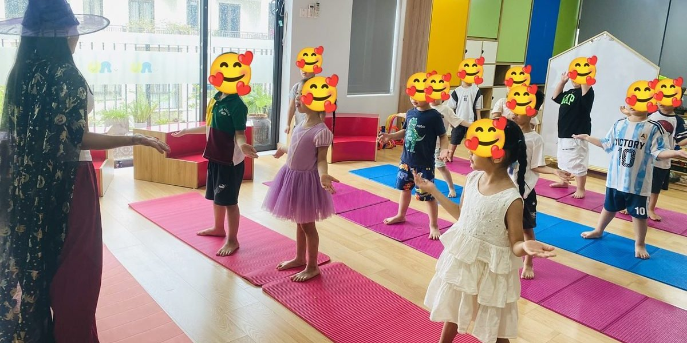
Đóng băng, lò cò qua sông, chui hang, đua thú… rồi nghe đoán con vật, túi bí mật, chuyền chuông không kêu. Cách ghép khối 10 phút, bốc thăm trò chơi và đồng hồ.
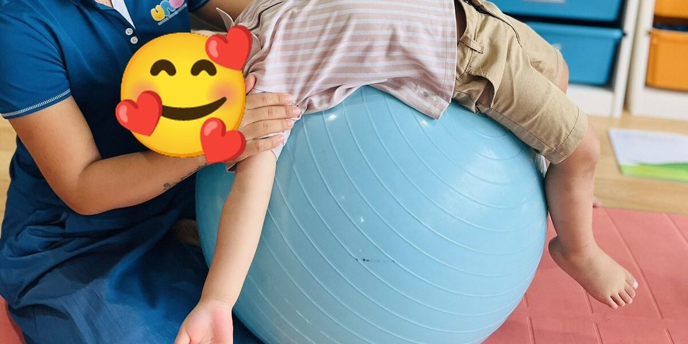
8 nguyên tắc dẫn tập (thẻ hình, ít lời, tôn trọng giác quan, cho con chọn), 8 bài đơn giản, video và bộ thẻ in được, cùng cách bố mẹ, cô giáo ở bên con.
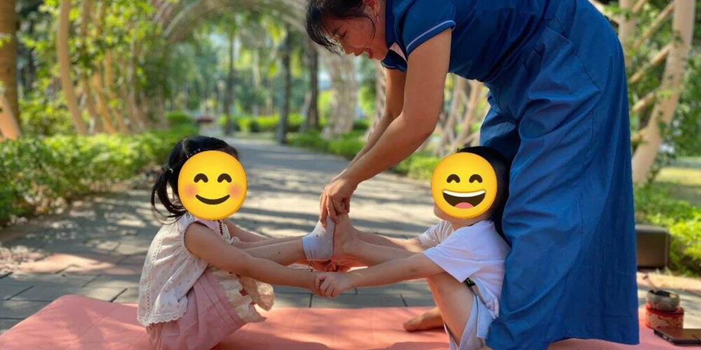
8 điều cô giữ khi dạy, 6 hoạt động con thích, video Đèn giao thông, buổi mẫu 20 phút. Và cách cha mẹ, cô giáo, bác sĩ cùng đi với con.
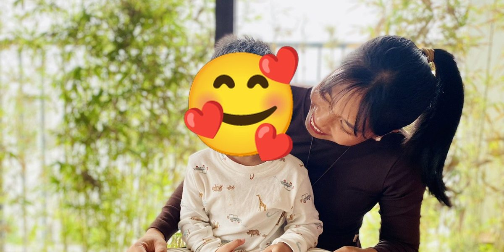
8 bài ngồi, nằm sấp, nằm ngửa trên bóng, trò chơi cả lớp, nhịp lăn bóng theo hơi thở, cách chọn bóng và video tập cùng cô.
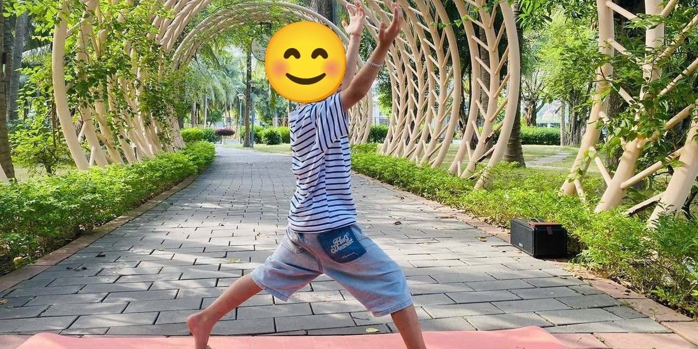
Thang tự tin 5 bậc, 8 tư thế sức mạnh, “3 hơi của sư tử con”, 4 trò chơi nhóm, thẻ lật đổi câu nói và video tập cùng cô.
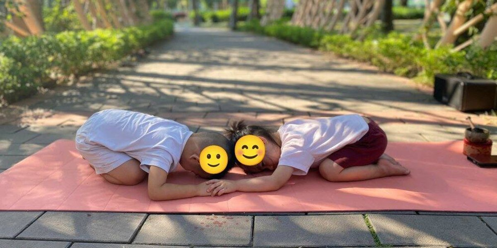
Ba bước Dừng, Gọi tên, Thở và 8 bài: em bé về tổ, sư tử gầm, ngửi hoa thổi nến, ru gấu bông, cái ôm con bướm… cùng cách bố mẹ, cô giáo ngồi bên con.
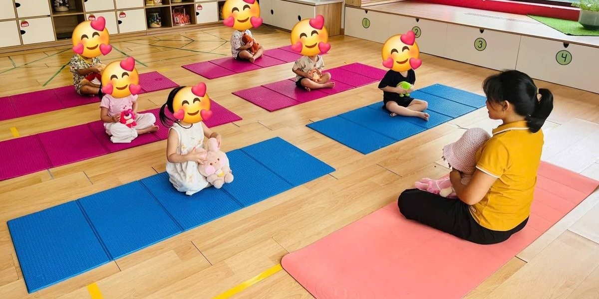
Dấu hiệu cần để ý, buổi tập mẫu 15 phút với 7 bài nhẹ, video và quả bóng thở, cách ngồi cùng con, chạm an toàn, nhịp sinh hoạt đều. Yoga đi cùng, không thay bác sĩ.
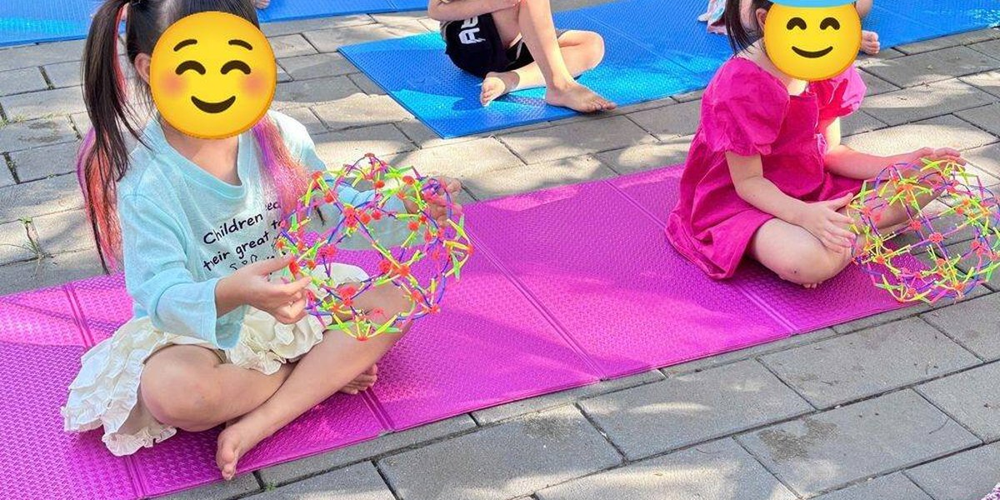
Động trước, tĩnh sau. 7 hoạt động cô hay dùng ở lớp, bài 10 phút cho bố mẹ ở nhà và những khoảng nghỉ một phút cho cô giáo mầm non.
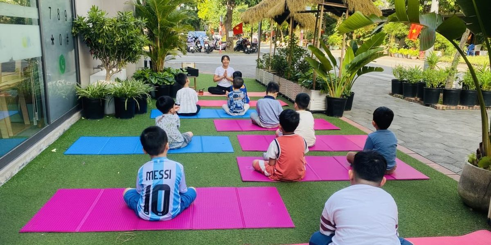
Tắc kè đi đâu đổi màu đó: cà chua, chanh, chuối, ngựa vằn, hươu cao cổ, cá heo, cầu vồng. 11 tư thế có ảnh thật và phép thở đổi màu.
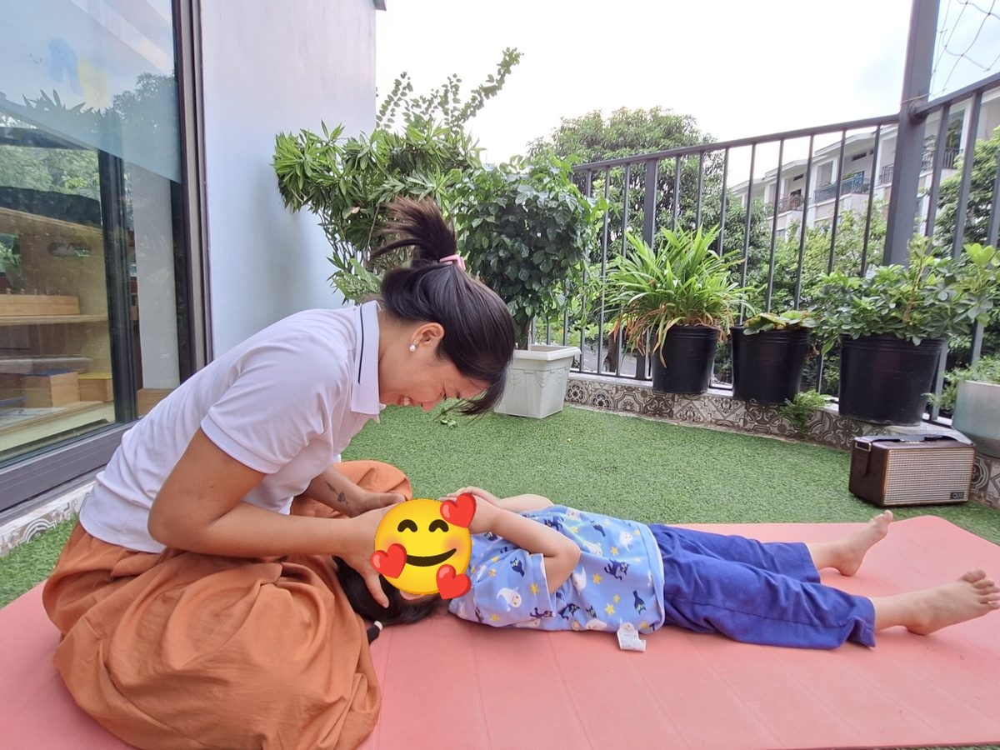
Những điều nhỏ cô gom lại sau các buổi dạy, cho thầy cô ở lớp và bố mẹ ở nhà. Bắt đầu từ massage cuối buổi, cô sẽ thêm dần.
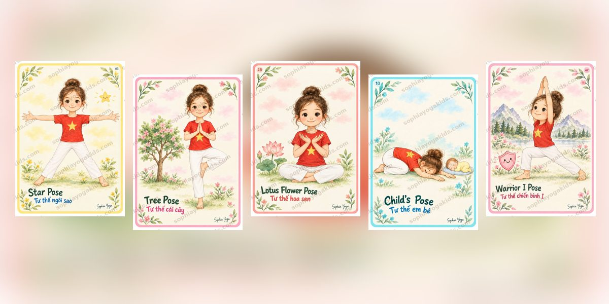
Bộ thẻ minh họa 50 tư thế: ngọn núi, cái cây, con mèo, cây cầu, chiến binh… có tên tiếng Việt và tiếng Anh.
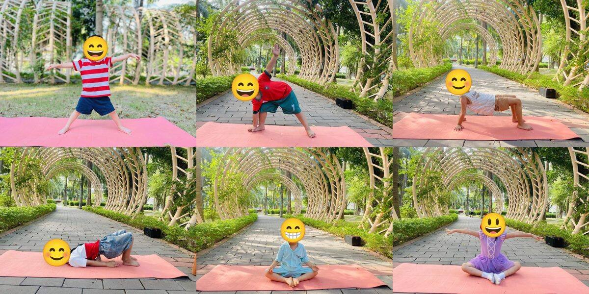
Ngôi sao, chú cua, hải cẩu, hoa sen… ảnh thật từ lớp cô Sophia, kèm cách làm và câu hô vui.
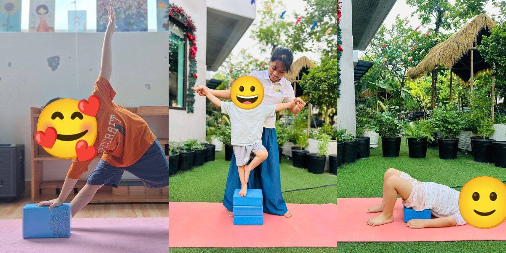
Cò con đứng mỏm đá, sâu đo ngủ gật, cái cày lên dốc… 50 tư thế có ảnh thật các bé, cách kê gạch và câu hô vui.
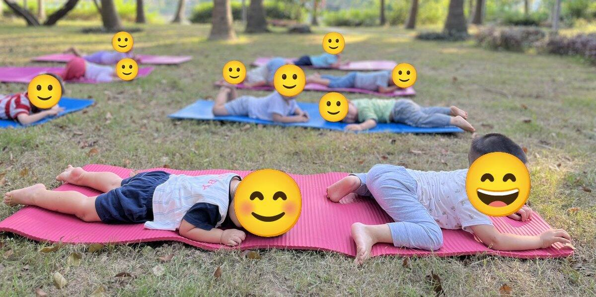
Cùng bé hóa thân thành rùa, cua, cá heo trong một chuyến đi đầy bất ngờ.
Tết, Trung thu, con vật, màu sắc… mỗi truyện 15 phút, 10 tư thế, kèm giới luật yoga và kỹ năng sống.
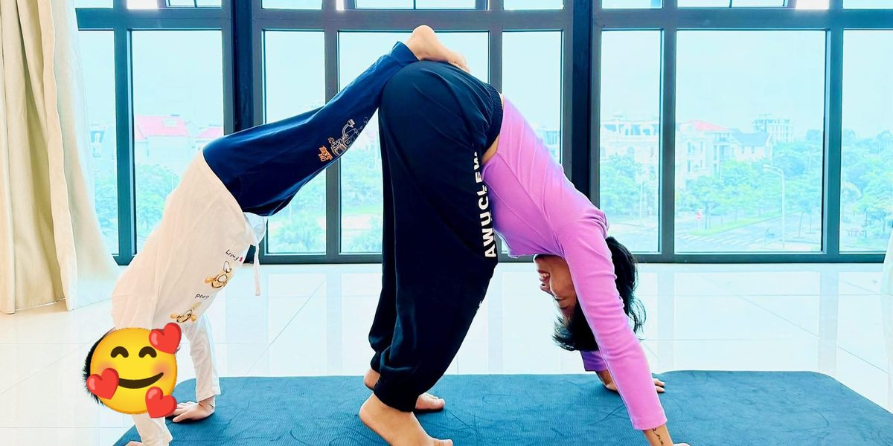
16 tư thế cha mẹ và con có ảnh thật (Núi mẹ núi con, Cưỡi ngựa đi chơi, Chim bay…) và 10 tư thế các con tập với nhau.
Cách chọn nhạc, an toàn, trình tự 15 phút và 12 động tác: Bướm bay theo nhạc, Chiến binh nhảy múa, trò chơi Tượng đá…
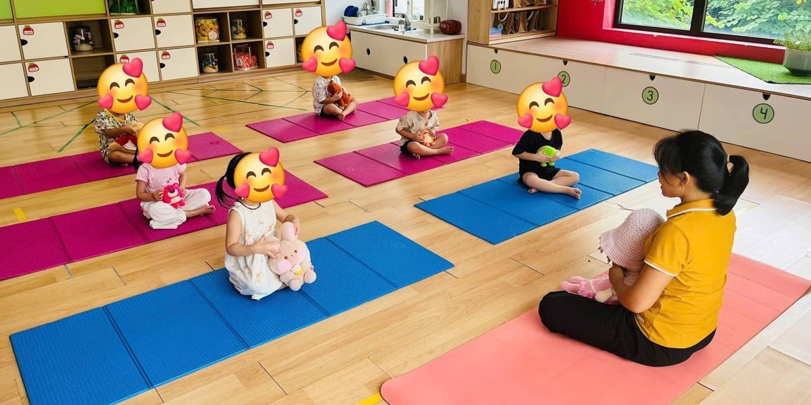
Gấu nằm trên bụng, bé nhìn thấy hơi thở của mình. Gấu nằm trên lưng, bé tự biết cử động thật chậm. 8 bài tập kèm ảnh thật từ lớp của cô Sophia.

Mục đích, lợi ích, cách chơi từng bước và điều cô luôn giữ khi cho các con gõ chuông xoay. Có video lớp thật và chiếc chuông để bé thử nghe ở nhà.

Cả lớp che mắt, cô lắc một nhạc cụ, con lên tìm đúng nhạc cụ ấy. Kèm video thật từ lớp mầm non.
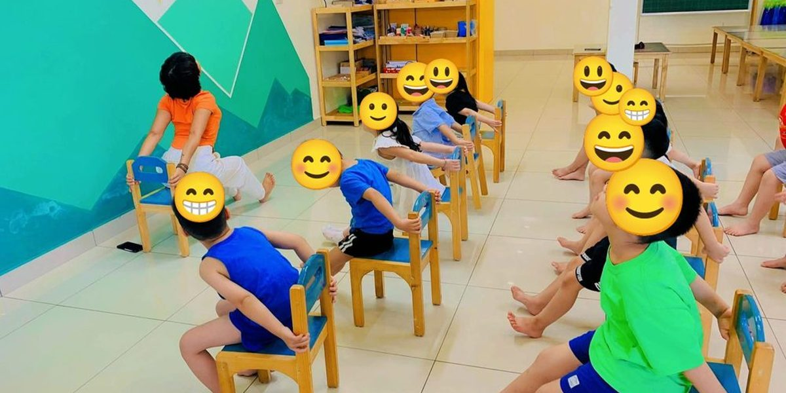
8 tư thế, video 5 động tác, trò chơi bốc thăm 1 phút giữa giờ học và cách kê góc học vừa với con.
Thói quen bữa ăn vui, xoa bụng theo vòng tròn có video, 8 tư thế yoga, trò chơi đĩa cầu vồng và khi nào cần đưa con đi khám.
Nghi thức chia tay ngắn và ấm, bài thở bóng bay có hướng dẫn, 6 thẻ đổi câu nói, 5 tư thế nhẹ, 7 ngày làm quen, video và khi nào nên hỏi bác sĩ.
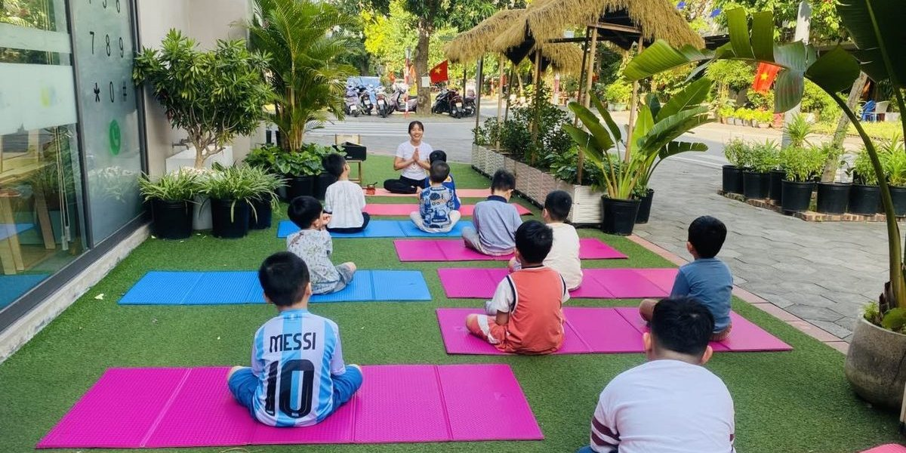
Ốm vặt bao nhiêu là bình thường, 10 điều cho một ngày khỏe (đánh dấu được), 10 phút yoga buổi sáng có đồng hồ và chuông, nghỉ khi con ốm, khi nào cần đi khám.
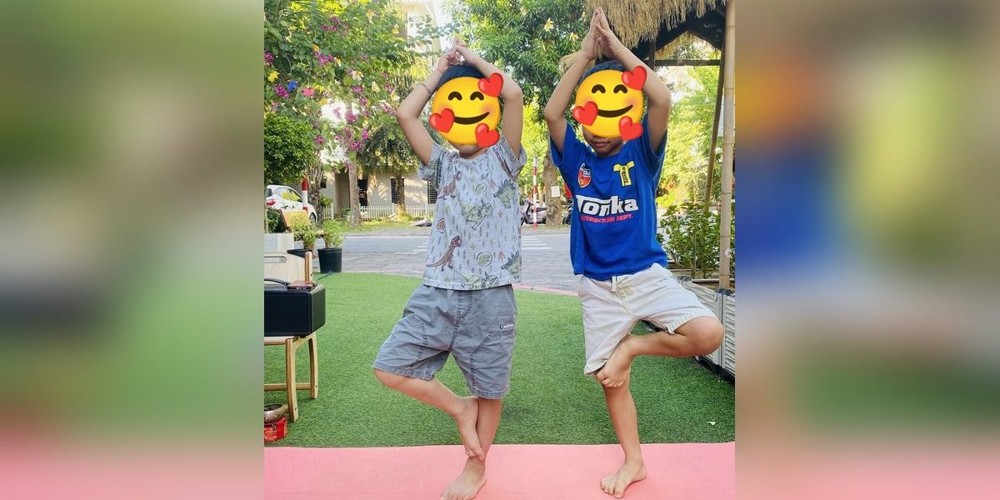
Con lớn nhờ gì, cần ngủ bao lâu theo tuổi, bài vươn cao như cây 10 phút có đồng hồ, 6 điều nghe nhiều hiểu cho đúng, khi nào cần khám nội tiết nhi.
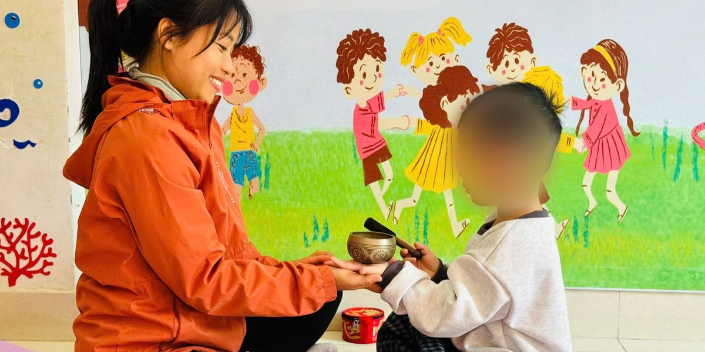
Bé không chịu tập, bé nằm ra cười, mình thì hồi hộp: đi lại một buổi yoga mầm non theo ảnh, lật thẻ 6 nỗi sợ, thử làm cô giáo một phút.
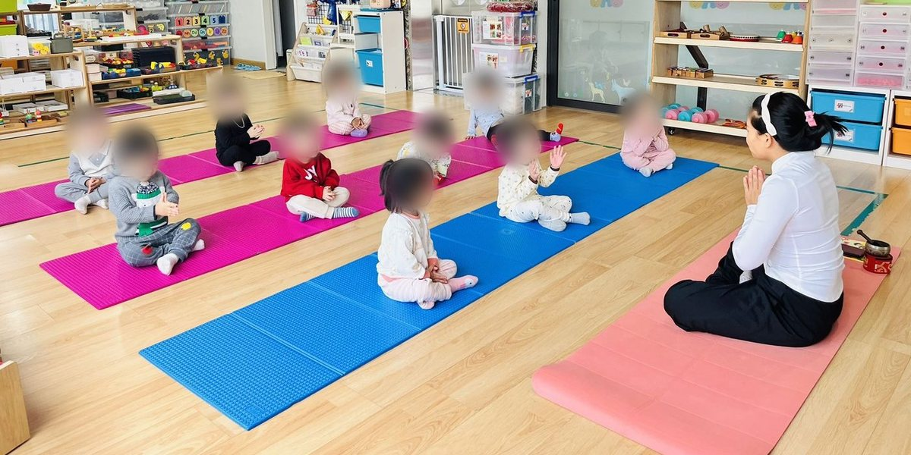
Bé dưới 3 tuổi học bằng mắt và bắt chước: bốn chặng của một buổi học, 6 thẻ con vật, đồng hồ 20 phút có chuông, chuẩn bị, an toàn và khi nào nên hỏi bác sĩ.
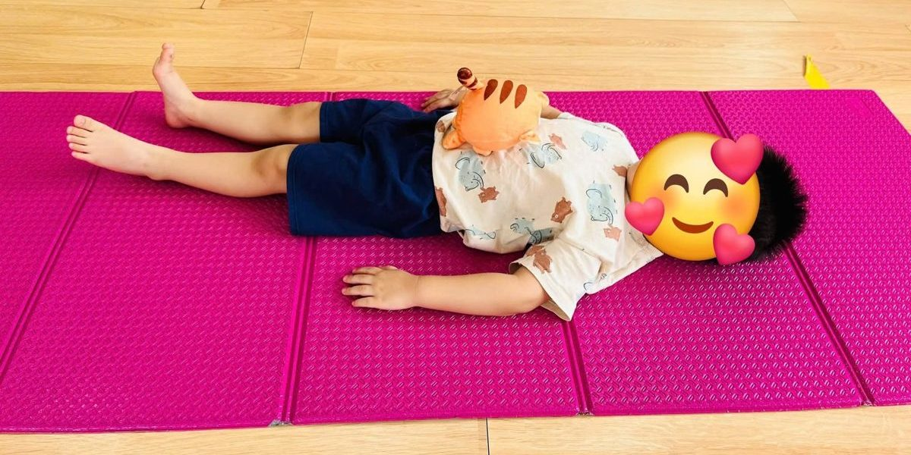
6 tư thế làm dịu, hơi thở ngửi hoa thổi nến, massage, bài thư giãn “Chú mèo lười” và mẹo giờ ngủ trưa cho cô giáo mầm non.
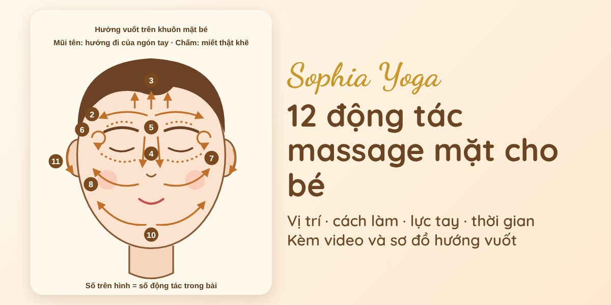
Vị trí, cách làm, lực tay, thời gian của từng động tác. Kèm video thật và sơ đồ hướng vuốt.
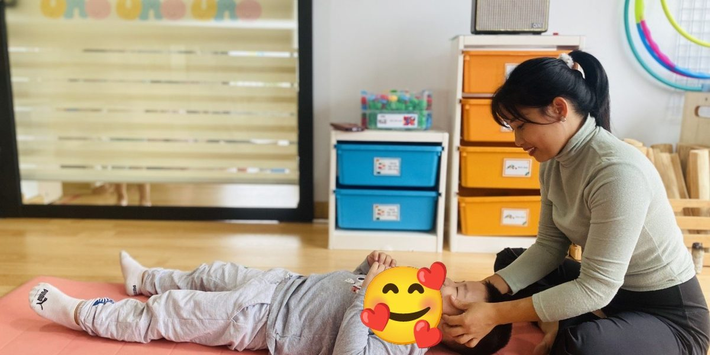
Vuốt ve, xoa nhẹ, nâng đỡ từng bạn. Và lời cô thầm chúc trong mỗi cái chạm: con khỏe mạnh, con bình an. 7 khoảnh khắc kèm ảnh thật.
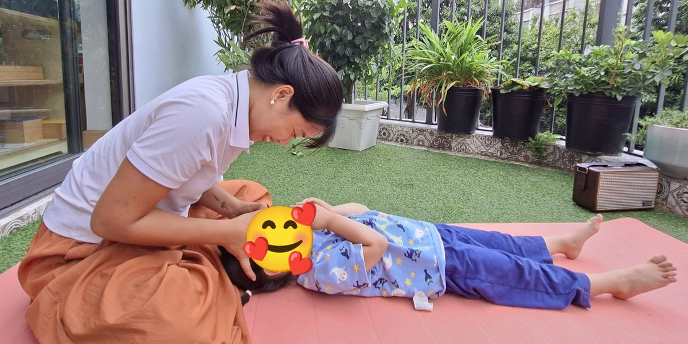
Cả lớp nằm yên, các cô đến từng bạn. Vì sao có 10 phút ấy, các con nhận được gì, và 9 động tác massage đầu, mặt thật nhẹ kèm ảnh thật.
Nằm sấp ôm bóng, tay chạm đất, nằm ngửa trên “đám mây”. Ý nghĩa của quả bóng, những gì cô thấy ở các con và vài điều an toàn, kèm ảnh thật.
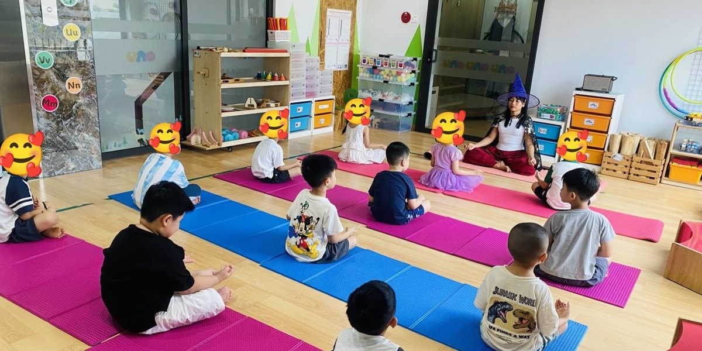
Buổi học thật ở lớp cô: mèo đen, chó sói, bí ngô, cướp biển, con dơi, con ma, công chúa, siêu nhân. 9 tư thế có ảnh và lời kể cho cô giáo.
Vừa hát vừa tập, bé nhớ chuỗi động tác thật nhanh.
Bài tập thở đơn giản bố mẹ có thể dùng mỗi khi bé nổi cáu.
Tải về hoặc nhắn Zalo cho Sophia để nhận file PDF miễn phí, in ra tập và chơi cùng bé.
Bộ slide Workshop 2 giờ: Cách hướng dẫn Yoga cho trẻ mầm non
Tài liệu kín. Trường đăng ký gói chuyển giao sẽ được Sophia gửi quyền xem riêng.
Liên hệ Zalo 0349 270 304 để nhận quyền xem“Các em bé xíu nhà Happy Kids trả bài cô giáo Sophia Yoga Kids ạ.” Cô giáo trường mầm non Happy Kids, gửi qua nhóm Zalo ngày 23/10/2026
Sau buổi chuyển giao đào tạo, các cô giáo của trường đã tự hướng dẫn các bé tập yoga trên lớp.
29 video tiết dạy mẫu của cô Sophia, chia 7 nhóm: yoga kể chuyện, yoga đôi, yoga với đồ vật, chủ đề và trò chơi, âm nhạc và tiếng cười, hơi thở và chánh niệm, tiết mẫu khác.
Cần mật khẩu để xem. Học viên nhận mật khẩu từ Sophia khi tham gia khóa học.
Vào Khu học viênNhững cuốn sách cho bé và dụng cụ tập yoga mà Sophia tin dùng.
Bé bắt chước ong bay, gấu nâu, sóc nhỏ. Rất hợp để tập yoga động vật. Cho bé 1 đến 4 tuổi.
Hỏi Sophia qua ZaloBaby bear, Brown bear, Polar bear, Panda bear. Bé vừa xem tranh vừa học tiếng Anh.
Hỏi Sophia qua ZaloSách tranh song ngữ kinh điển của Eric Carle (The Very Hungry Caterpillar).
Hỏi Sophia qua Zalo* Đây là link tiếp thị liên kết: khi bạn mua qua link, Sophia có thể nhận một khoản hoa hồng nhỏ, giá bạn trả không đổi.
Dành cho giáo viên mầm non, huấn luyện viên yoga muốn dạy thêm cho trẻ em, và bố mẹ muốn tập yoga cùng con.
Bạn có thể học trực tiếp hoặc online qua Zoom. Khi học Zoom, Sophia vẫn nhìn và chỉnh tư thế cho từng học viên.
Có. Học viên hoàn thành khóa HLV Yoga trẻ em 30h được nhận chứng nhận của Sophia Yoga.
Khóa HLV Yoga trẻ em 30h có hai cách học: học qua video quay sẵn 3.690.000đ, hoặc học online qua Zoom trực tiếp 8.000.000đ. Học phí các khóa khác xem ở mục Khóa học & học phí. Nhắn Zalo để Sophia gửi lịch khai giảng và cách đóng học phí.
Sophia có thể đến trường dạy trực tiếp các lớp (200.000đ đến 250.000đ một tiết 30 phút, tặng 1 buổi demo), hoặc tập huấn giáo viên của trường qua gói Yoga for School. Nhắn Zalo để Sophia tư vấn.
Để lại thông tin, Sophia sẽ gọi lại trong vòng 24 giờ. Nhanh nhất là nhắn Zalo 0349 270 304.